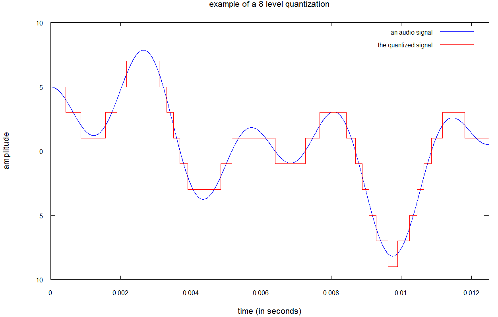
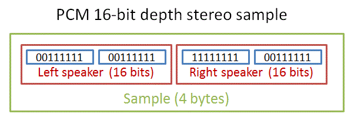
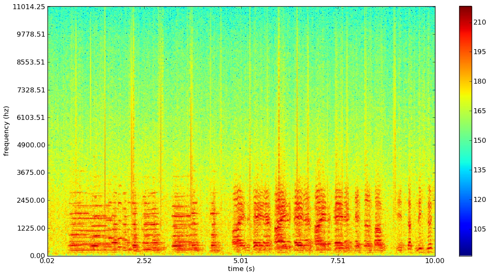

About Shazam
Shazam is a software development company that offers a smartphone and computer applications that can identify music, movies, television, and advertising promos just from a thirty second sound sample. In order to do so, Shazam accesses the device's built-in microphone, thereby capturing the sound emitted via radio, speaker, etc., and uses this "acoustic fingerprint" to compare against the fingerprints stored in its main database.
If a match is found, the information regarding the audio clip (i.e. name, singer, and album) are relayed to the user, along with links to music streaming applications such as YouTube or Spotify, lyrics to the song, and music recommendations. If a match is not found, this is likely because of background noise levels that disturbs the overall sound quality and distorts the sound being produced, or because the song is not in Shazam's database.
Overview
Digitized Audio
Making sense of how Shazam works requires an in-depth look into the process of digitizing analog sound and understanding how it's represented.
Physics of Sound
A pure tone can be represented as the a sinusoidal wave, as displayed on the left. A sinusoidal wave essentially has two properties: its amplitude and period. Its amplitude is the length from the x-axis to the maximum of the wave (2x10^-2 N/m^2), and its period is the length from one maximum to the next (4ms). From the period, we can calculate the frequency of the wave, which is the reciprocal of the period (250 Hz).
However, this applies only to a pure tone. Most sound is a combination of sound waves, and looks more like the graph on the right. Here you can see that the sound wave (or, if you prefer to think of it so, music itself) consists of multiple overlapping waves with different frequencies. However, this is the analog representation of any sound (and by analog, I mean a continuous and non-digital). Storage restrictions require that we store only a fraction of the constituent numbers of a sound wave, and this is where sampling comes in.
Sampling
Sampling is the process of measuring the quantity we're interested in - in this case, sound - at evenly spaced intervals. Now we don't want to over-sample, because that means we'll end up storing more information than necessary to determine the properties of the wave. At the same time, we don't want to under-sample, because we'll end up with a distorted version of the original wave. We know that humans can hear sounds between frequencies of 20Hz and 20kHz. According to the Nyquist-Shannon Theorem, to digitize frequencies between 0Hz and 20kHz, you need at least 40,000 samples per second. This is so that we can identify at least 2 points per cycle. In other words, if you identify two points per cycle of a sound wave, you will be able to effectively reconstruct a good approximation of the wave. On the left is an example of good sampling, and on the right is an example of under-sampling.You can see that when less than two points per cycle are denoted (on the right), the wave reconstructed from these points is glaringly incorrect. The data collected from sampling is what we store as the digitized version of our analog sound waves.

Quantization
Loudness is digitized using a process called quantization. We are faced again with the same issue - how do we effectively store enough of the loudness that the audio is identical to the original audio, while also minimizing the storage space? On the right is an example of 8 level quantization (also known as 3 bits quantization, because only 3 bits are required to represent 8 levels. Typically, 16 bit quanitization is used simply because our ears are not incredibly sensitive to require more (like 24 or 64 bit). Pulse Coded Modulation
Pulse Coded Modulation, also called PCM, is the widely used and accepted format for storing digitized audio. As we established earlier, the sampling rate is around 40K samples per second. One sample itself takes 4 bytes, 2 for each speaker (left and right)Fourier Transform
To convert from digital sound to frequencies (which is essential because Shazam deals in frequencies), we need to perform a Fourier transform. The Fourier Transform converts a continuous function of time to a function of frequencies. Since our digital representation is non-continuous, we instead apply the Fourier Transform onto chunks of the signal and derive our function of frequncies from that.Audio Fingerprinting
At Work

Audio fingerprinting is what Shazam uses to identify music. Shazam runs its fingerprinting algorithm on the music its being fed through the speaker and then compares it to the fingerprints of songs in its database. Matches need to be made accurately as well as quickly (you don't see the app stalling for hours as it plods through hundreds of millions of songs, do you?). The fingerprinting algorithm converts the frequencies outputted by the Fourier Transform to a spectrogram that is then used as the basis for comparison.
The spectrogram is filtered so that only the strongest frequencies (essentially the loudest sounds) are used as identifiers for the track. So when Shazam collects this 10-second fingerprint, it scans through the n-second fingerprint of another song to look for matches - but it doesn't compare at every second. Instead it looks at target zones. If there's a match between the target zone and the fingerprint, the user is notified of the app's success. Unfortunately Shazam hasn't made public the key parts that make the algorithm so efficient (how the target4 zones are created), so that part remains uncertain.